Immer dieselbe Runde
Seit Monaten derselbe Weg – und keine Ahnung, wo es schöne Alternativen gibt.
Jeden Tag ein neuer Rundweg in deiner NäheWir berechnen für deinen Standort Rundwege, die es so noch nirgends gibt – aus den offiziellen Wanderwegen von swisstopo und OpenStreetMap. Neu für die ganze Schweiz.
Seen, Berge, Wasserfälle, Täler und Gletscher: die bekanntesten Ausflugsziele der Schweiz, mit Foto, Distanz von dir aus und dem nächsten Ort. Speichere deine Favoriten und sieh, wie hundefreundlich ein Ort ist.
Ausflug finden →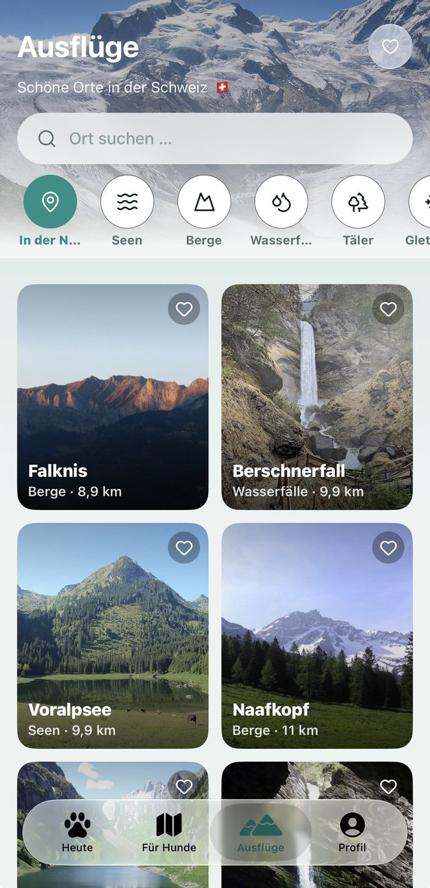
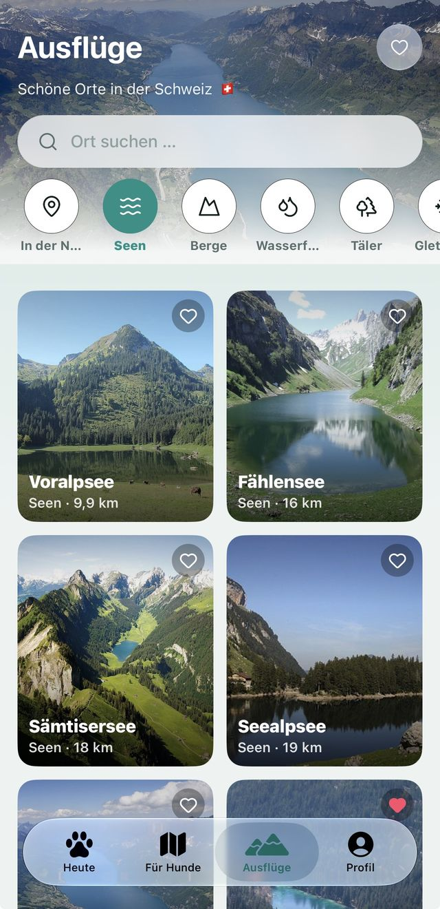
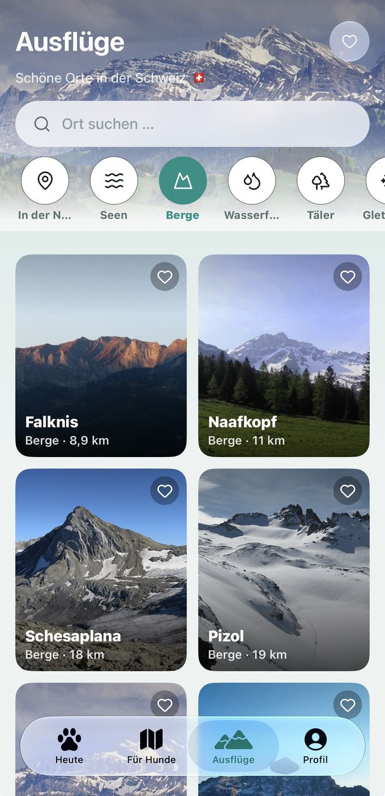
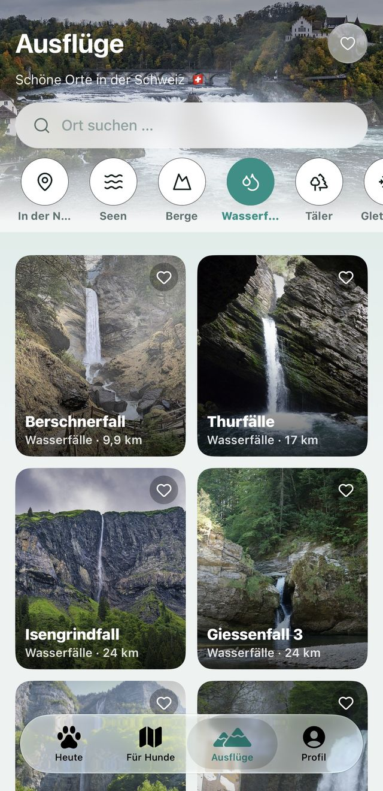
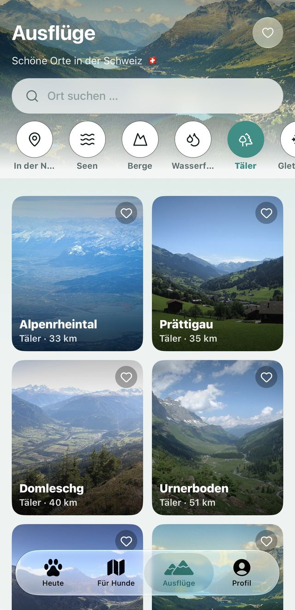
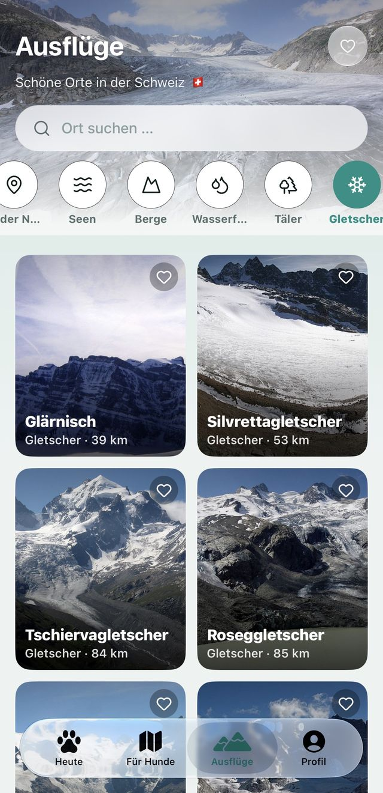
Was liegt ganz in deiner Nähe?
Fotos in der App: Wikimedia Commons, mit Autor und Lizenz bei jedem Ort.
Gassi gehen sollte entspannt sein – ist es aber oft nicht.
Seit Monaten derselbe Weg – und keine Ahnung, wo es schöne Alternativen gibt.
Jeden Tag ein neuer Rundweg in deiner NäheAusgelegte Köder sind eine reale Gefahr – und meist erfährst du es zu spät.
Der Giftköder-Radar warnt dichTierarzt, Hundeschule, Auslaufzone, Shop – verstreut über zwölf Webseiten.
Alles auf einer KarteEin Blick in die App – vom täglichen Vorschlag bis zum Ausflug am Wochenende.
Eine App statt zwölf offener Tabs – Routen, Sicherheit, Services und Ausflüge an einem Ort.
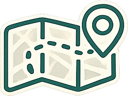
Hundefreundliche Spazierrouten in deiner Nähe – mit Karte, Distanz, Fotos und echten Bewertungen anderer Hundebesitzer.
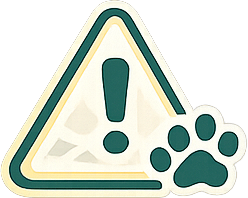
Sieh auf einen Blick, wo Giftköder gemeldet wurden – und warne andere mit einem Tipp, wenn du etwas entdeckst.
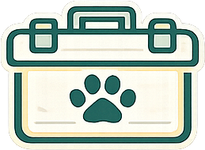
Tierärzte, Hundeschulen, Shops und Auslaufzonen – alle Services rund um deinen Hund auf einer Karte.
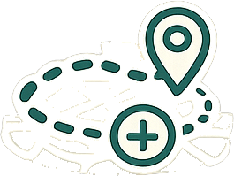
Lege deine Lieblingsrunde an, beschreibe sie und teile sie mit anderen Hundebesitzern. Sammle Likes und Favoriten.
Rundwege ohne Strassen und immer am Wasser, berechnet aus den offiziellen Wanderwegen der Schweiz – auch dort, wo noch niemand eine Route eingetragen hat.
363 schöne Orte der Schweiz – Seen, Berge, Wasserfälle, Täler und Gletscher, mit Foto und Distanz. Speichere deine Favoriten.
Öffne die Karte und entdecke hundefreundliche Routen rund um deinen Standort.
Folge der Route, behalte den Giftköder-Radar im Blick und geniesse den Spaziergang.
Bewerte die Route, lade Fotos hoch und hilf anderen Hundebesitzern, die schönsten Wege zu finden.
Gemeldete Giftköder werden direkt auf der Karte angezeigt. Erhalte Warnungen für deine Region und melde selbst gefährliche Stellen – so schützen sich Hundebesitzer in der ganzen Schweiz gegenseitig.
★★★★★ 5,0 · 3 Bewertungen im App Store
«Eine wirklich tolle App! Die Routen sind übersichtlich, leicht zu finden und super für Spaziergänge mit dem Hund. Besonders gefällt mir, dass man eigene Wege teilen kann und trotzdem volle Kontrolle über die Privatsphäre behält. Weiter so! 🐾🌟»
«Super!»
Rundwege, Tierärzte, Hundeschulen, Shops und Robidog-Stationen in der ganzen Schweiz und in Liechtenstein.
Kostenlos nutzbar – mit optionaler Unterstützung für die Weiterentwicklung.
Die erste Woche ist gratis. Kündigen jederzeit.
UnterstützenHundeZonen ist eine App, in der du deine Lieblingsrouten zum Gassi gehen mit deinem Hund speichern kannst. Ausserdem entdeckst du Routen, die andere Nutzer in deiner Nähe erstellt haben – mit allen Infos, die du vor dem Spaziergang brauchst.
Wenn du die App öffnest, erkennt sie automatisch deinen Standort und zeigt dir die nächstgelegenen Routen anderer Nutzer. Du siehst, ob es auf der Route Wasser, Schatten, Parkplätze, Restaurants oder andere nützliche Services gibt.
HundeZonen ist für die Schweiz und Liechtenstein gemacht: die Wege, die Tierärzte, die Hundeschulen und die Robidog-Stationen stammen alle aus Schweizer Quellen.
Sie baut dir Rundwege, die an einem Parkplatz beginnen und dort wieder enden, aus den offiziellen Wanderwegen von swisstopo und aus OpenStreetMap. Zu jedem Weg siehst du, was gemessen wurde: Kilometer, Wald in Prozent, ob er eine Strasse kreuzt, ob er am Wasser entlangläuft und wie weit der Parkplatz entfernt ist. Die interaktive Karte ist Teil des Abos.
Aus zwei offiziellen Quellen: den Wanderwegen von swisstopo, dem Bundesamt für Landestopografie, und aus OpenStreetMap. Daraus rechnen wir die Runden selbst – deshalb findest du auch dort etwas, wo noch niemand eine Route eingetragen hat. Die Routen der Community kommen von anderen Hundebesitzern.
Die Wege deiner Umgebung werden auf dem Handy gespeichert. Wenn du sie einmal geöffnet hast, kannst du sie später auch ohne Empfang wieder ansehen – praktisch genau dann, wenn du mit dem Hund draussen im Feld bist.
Er bleibt auf deinem Handy. Wir fragen damit nur, welche Wege in deiner Nähe liegen; wir speichern keine Bewegungsprofile und verkaufen keine Daten. Du kannst den Standort jederzeit in den Einstellungen deines Handys ausschalten – dann zeigt die Karte einfach die ganze Schweiz.
Nur wenn du es willst. Du entscheidest bei jeder Route, ob sie öffentlich ist. Und im privaten Modus bist du für alle anderen komplett unsichtbar – dein Profil, deine Routen, alles.
Jederzeit, direkt in den Einstellungen deines App-Store- oder Google-Play-Kontos. Es gibt keine Kündigungsfrist und keine Mindestlaufzeit. Die erste Woche ist gratis.
Ja, die Grundnutzung ist komplett kostenlos. Es gibt ein optionales Abo, das die interaktive Karte, alle Videos, unbegrenzte Routen und die Giftköder-Mitteilungen freischaltet – und damit Server, Datenbank und Weiterentwicklung trägt. Die erste Woche ist gratis.
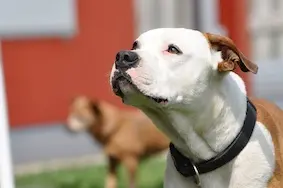
Diese App ist mit ihm entstanden – und die ersten Wege darin sind seine. In Erinnerung an meinen treuen Begleiter.